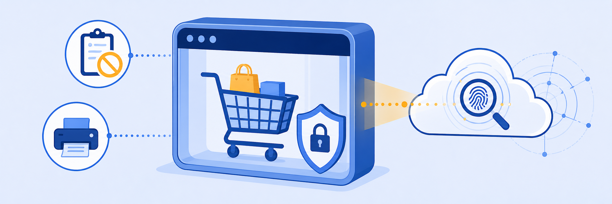
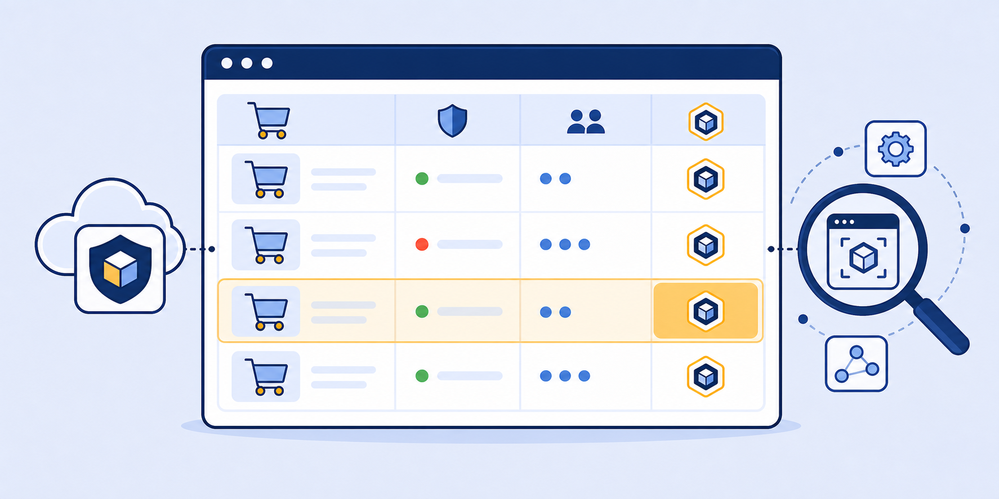
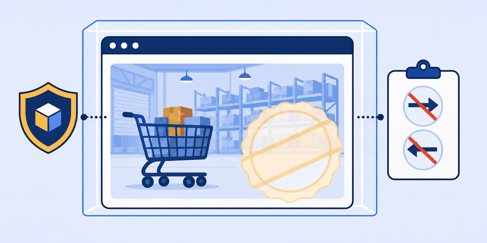

Lab 5: Using Isolate Action in Cloud Application Control Policies
LAB 5
Scenario: Cloud App Control policies classify traffic by cloud application identity (not just URL category) and can apply the Isolate action. This allows organisations to isolate high-risk consumer applications — like online shopping sites — while still giving users access, using a stricter Isolation Profile than the URL filtering approach.

THINK FIRST · CLOUD APP ISOLATION
URL categories group broadly (e.g., "Shopping"). Cloud App Control identifies specific applications (e.g., "Costco," "Amazon") by their traffic signatures, enabling more granular isolation decisions than category-level URL filtering.
- Cloud App Control identifies traffic by application identity rather than URL category. What can Cloud App Control detect that URL Filtering cannot, and why does this matter for isolation policy?
- The Consumer / Online Shopping Cloud App Control policy uses the "Confidential" Isolation Profile. This profile blocks copy/paste and file transfers. Why is a stricter profile used for shopping sites compared to the news sites in Lab 4?
- A user accesses amazon.com, which is matched by the Consumer / Online Shopping policy. Later they navigate to amazon.com/aws, which is a SaaS/business service. Should both be isolated? How would you handle this?
Task 5.1: Review Cloud App Control Policies with Isolate as Action
1 Inspect the Consumer / Online Shopping Policy
- In the ZIA Admin Portal, go to Policy › URL & Cloud Application Control › Cloud App Control Policy.
- Scroll through the list and locate the Consumer / Online Shopping policy.
- Click the eye icon to review its settings.
- Note the Applications listed (IKEA, Best Buy, Wayfair, Costco, etc.), Action: Isolate, and Isolation Profile: Confidential.

My Questions
My Notes
Task 5.2: Test Isolate as an Action in Cloud App Control Policies
1 Access a Shopping Site in Isolation
- On the Client PC VM, open a browser and navigate to
https://www.costco.com. - Observe that Costco loads in isolation with the isolation banner.
- With the Confidential Isolation Profile active, you cannot: copy/paste, upload or download files, or render Office files.
- The page is watermarked with your user identity and timestamp.
- Verify that you can type text on the page (text input is not restricted in this profile).

My Questions
My Notes
MENTAL NOTE
Cloud App Control Isolation targets specific applications by identity, not broad categories. The Confidential profile enforces maximum data control: no clipboard access in either direction, no file transfers, no Office rendering — appropriate for consumer apps where exfiltration risk is high.